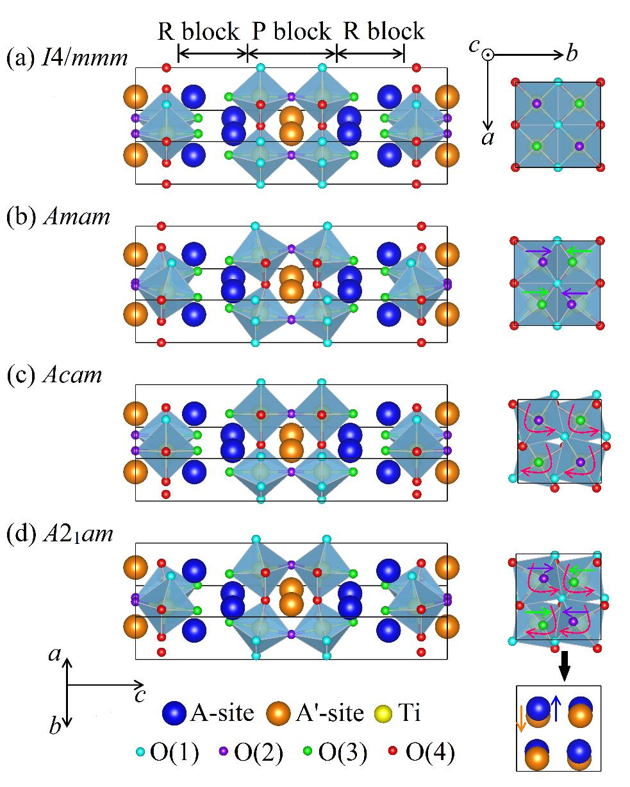
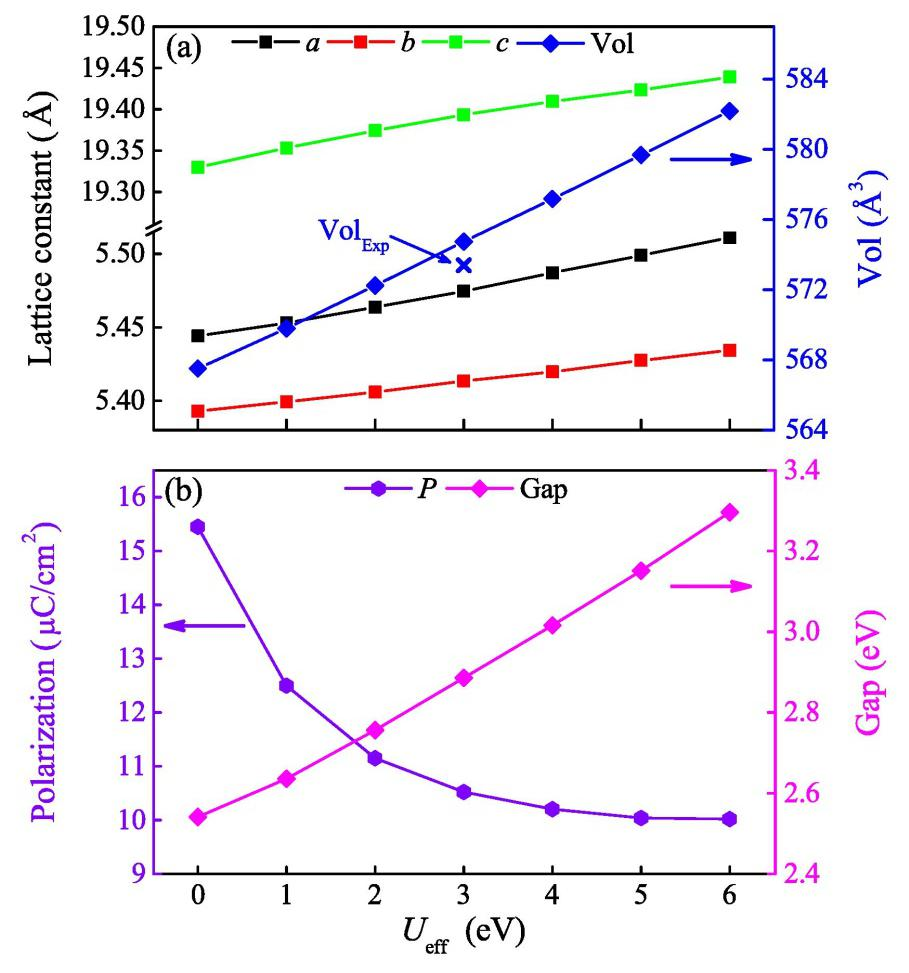
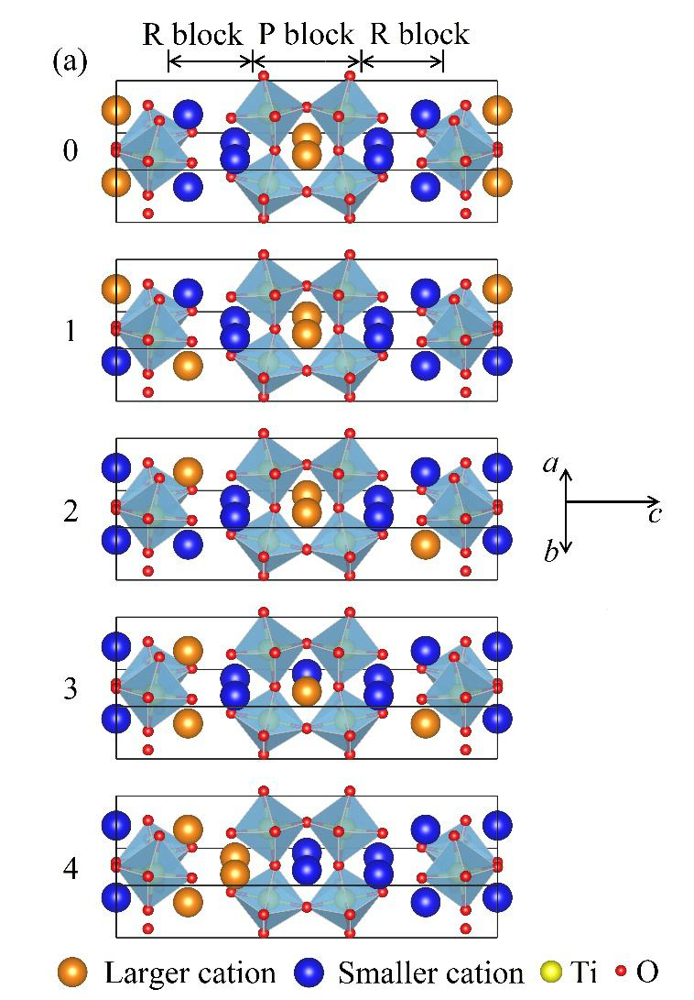
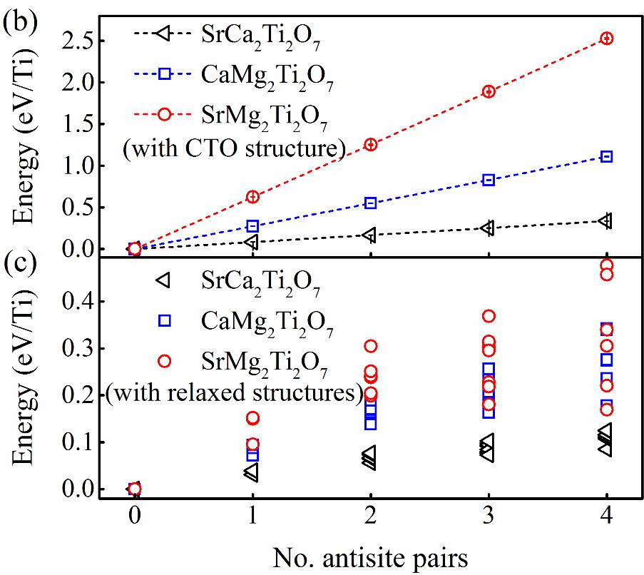
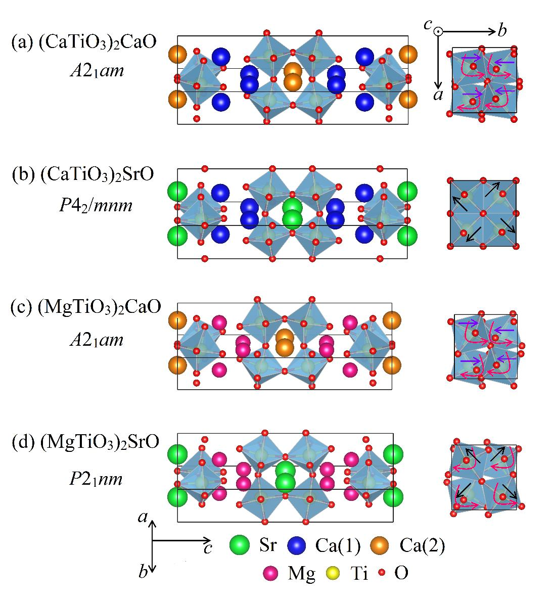
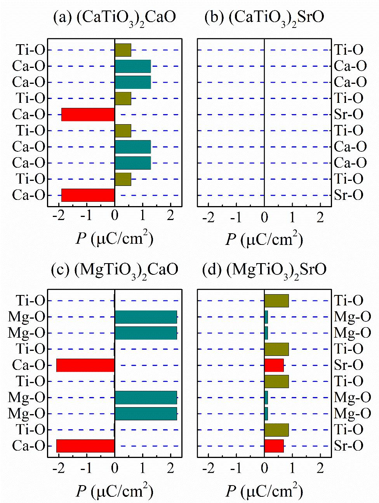

Ti
O
tunedby
S.H.Zheng,
H.W.Wang,
J.J.Gong,
X.Li,
Y.Zhang,
K.L.Yang,
L.Lin,
Z.B.
S.Dong,
2,*
andJ.–M.Liu
1,3
Ca
Ti
O
isanexperimentallyconfirmedhybridimproperferroelectricmaterial,in
octahedral
Ti
O
A
’/
A
sitesrespectively,allowingthepossibilityforsite-selectivesubstitutions.
octahedralrotationandtilting,andthuschangethestructureandpolarization.Usingthe
)
SrObecomesnon-polar,whichcan
)
CaOisalmostdoubledupon
)
SrOremainspolarbutitsstructuralspacegroupchanges,withmoderateincreased
A
Ti
O
familyandsuggestsonemorepracticalroutetotunehybrid
StructuraltransitionsinhybridimproperferroelectricCa
site-selectiveiso-valentsubstitutions:afirst-principlesstudy
C.F.Li,
Yan,
LaboratoryofSolidStateMicrostructuresandInnovativeCenterofAdvanced
Microstructures,NanjingUniversity,Nanjing210093,China
SchoolofPhysics,SoutheastUniversity,Nanjing211189,China
InstituteforAdvancedMaterials,SouthChinaNormalUniversity,Guangzhou510006,China
[Abstract]
whichtheelectricpolarizationisinducedbyacombinationofthecoherentTiO
rotationandtilting.Inthiswork,weinvestigatethetuningofferroelectricityofCa
usingiso-valentsubstitutionsonCa-sites.Duetothesizemismatch,larger/smalleralkaline
earthsprefer
Withoutextracarriers,suchsite-selectediso-valentsubstitutionscansignificantlytunethe
TiO
first-principlescalculations,ourstudyrevealsthatthreesubstitutedcases(Sr,Mg,Sr+Mg)
showdivergentphysicalbehaviors.Inparticular,(CaTiO
reasonablyexplainthesuppressionofpolarizationuponSrsubstitutionobservedin
experiment.Incontrast,thepolarizationin(MgTiO
substitutions,whiletheestimatedcoercivityforferroelectricswitchingdoesnotchange.The
(MgTiO
polarizationandpossibledifferentferroelectricswitchingpaths.Ourstudyrevealsthesubtle
ferroelectricityinthe
improperferroelectricity,inadditiontothestraineffect.
*Correspondingauthor.Email:sdong@seu.edu.cn
Aferroelectricisamaterialwithaspontaneouselectricpolarization(
P
),whichcanbe
E
).Ferroelectricmaterialshavebeenwidelyusedincapacitors,
Conventionally,ferroelectricscanberoughlyclassifiedintotwocategoriesintermof
Thescopeofimproperferroelectricscanbeevenbroader.Onehighlypromisingbranchis
Mn
O
(CMO)andCa
Ti
O
(CTO).In
Ti
O
[10]
x
](Ca
y
Sr
1-y
)
1.15
Tb
1.85
Fe
O
-[
x
]CTO[11],whiletheCMOismorecomplicatedbeyond
Furthertheoreticalstudiesfoundmultiplerotation/tiltingmodesinthese327-RPseries
I.Introduction
reversedbyelectricfield(
piezoelectricsensors/transducers,randomaccessmemories,etc[1-3].Moreferroelectrics
withsuperiorperformancearestillinappealing,triggeringcontinuoussearchingforvarious
propertiesandfunctionalities[4].
polarizationgenerationmechanisms.Oneclassfallsinthedisplacive-typecategorywhere
spontaneouspolarizationiscausedbythedisplacementofatomsrelatedtotheirhigh
symmetricpositionsinparaelectricphase,whichismorefrequentlyseenininorganic
materials.Theotherclassbelongstotheorderingofpolargroup(orcollectiveprotontransfer),
whichismorecommoninorganicmaterials[5].Forthefirstclass,traditionally,thepolar
phononmodesareusuallyresponsiblefortheferroelectricstructuraltransition,i.e.ion
displacements.However,somenovelmechanismsforferroelectricitygenerationhavebeen
foundinrecentyears,enrichingthequantumphysicsofferroelectricityandpotentialsof
additionalfunctionalities.Forexamples,anumberofmagnetism-inducedferroelectrics(the
so-calledtype-IImultiferroics)havebeenfound,andthemagnetoelectriccouplingand
inter-controlfunctionalitiesarebeingrealized[6,7].Intheseimproperferroelectrics,the
polarphononmodesarenolongerthedrivingforceofferroelectricity.
theso-calledhybridimproperferroelectrics[8,9],asfirstpredictedineven-layered
Ruddlesden-Popper(RP)perovskiteoxides,e.g.Ca
theRPseries,thelayeredstructuremakesthemattractiveasnaturalatomic-scalesuperlattices.
Theoriginoftheirpolarizationsstemsfromacombinationofcoherentoxygenoctahedral
rotationmodeandtiltingmode,neitherofwhichispolar(seeFig.1).Furthermore,the
octahedraltiltingmodecaninduceweakferromagnetisminCMOduetospincanting,while
theoctahedralrotationmodetriggersthemagnetoelectricity[8].Thesecharacteristicsof
hybridimproperferroelectricitymakethe327-RPperovskitehighlyinteresting.
Experimentally,thehybridimproperferroelectricityhasbeenverifiedin(Ca,Sr)
and[1-
theoriginalprediction[12].
beyondthegroundstateone,whichcouldleadtoproximateenergiesbutdifferentspace
groups.Someofthesespacegroupsarenonpolar,whilesomeofthemarestillpolar.Thus,it
Besidesepitaxialstrain,iso-valentsubstitutionisalsoaverypowerfultooltofinetune
Inthiswork,thestructureandferroelectricityofiso-valentsubstitutedCTOisstudied
U
methodisemployedtore-calculatetheelectric
A
TiO
)
A
'Owith
A
=Ca(1)and
A
=Ca(2).TherearetwoinequivalentCasites,
)
SrO,(MgTiO
)
CaO,and(MgTiO
)
SrO.Thereasonforsuchconfigurationswillbe
The327-typeCTOhasitsferroelectricstructure(spacegroup
A
am
)andhypothetical
isscientificallyinterestingtoinvestigatethetransitionsbetweenthesestructures,whichcan
playastheintermediatestatesofferroelectricswitchingornewgroundstatesupon
perturbations.Forexample,NowadnickandFennieidentifiedpossibleferroelectricswitching
pathwaysinCTO,whichwereviaanorthorhombictwindomainorviaanantipolarstructure
[13].Theseswitchingpathwaysarerelevanttoferroelectricdomainwallsandcoercivity.A
smallcoercivityiscrucialforenergysavinginapplicationsofferroelectricity.Inaddition,Lu
andRondinellipredictedthepolar-to-nonpolartransitionsachievedinCTOandmagnetic
Ti-sitesubstitutedCTOfilmviaepitaxialstrain[14,15].
thestructure,andthenthehybridimproperferroelectricity.Thesubtlebalancebetweenthe
rotation/tiltingmodescanbeeasilyinfectedbythesubstitution,althoughnoextracarriersare
introducedintothesystem.Experimentally,Sr-substitutedCTOhasbeensynthesized,whose
ferroelectricpolarizationissignificantlysuppressedcomparingwiththatofCTO[10],
althoughanearlytheoreticalcalculationrecommendedtheenhancementofpolarizationin
generalbylargersizeionsubstitution[16].
usingthedensityfunctionaltheory(DFT)calculations.First,thePerdew-Burke-Ernzerhof
revisedforsolid(PBEsol)parameterizationofthegeneralizedgradientapproximation(GGA)
pluson-siteCoulombinteraction
polarizationofCTO,intendingtogiveamorepreciseconsistencywithmeasuredvalues,
sincepreviousDFTstudiesoverestimatethepolarization[10,13,14].Second,basedonthe
accurateCTOresult,thesite-selectivesubstitutionsarestudiedtotunethestructureaswellas
theferroelectricity.FortheRPstructure(seeFig.1),thechemicalformulaofCTOcanbe
re-writtenas(
whichleadtothepossibilityforthesite-selectivesubstitution.HerealargersizeionSranda
smallersizeionMgareconsideredintheiso-valentsubstitutions,leadingtothreecompounds:
(CaTiO
explainedinthefollowingsections.OurDFTcalculationsonthesethreecompoundsgive
interestinganddivergentresults.
II.Modelsystemsandcomputationalmethods
2.1.Structuralconsiderationofmodelsystems
Amam
),asshowninFig.1(d)and1(b)respectively.The
A
'-site),andarock-salt(R)blockconsistingofarrangedCa(1)ionsatthe
A
-sites,and
octahedraalongthe
c
-axis.The
A
-cationisatthe9-coordinatesiteand
A
'-cationatthe12-coordinatesite.Thedifferentcoordinationnumbersof
A
-sitesintheR
A
'-sitesinthePblocksleadtothepreferentialsubstitutionoflarge/smallionsin
Takingthehighlysymmetric
I
4/
mmm
structureasthestartingpoint(Fig.1(a)),the
Amam
/
Acam
structurerespectively,neitherof
Amam
phase(Fig.
a
−
a
−
c
tiltingwithrespecttothetetragonal
I
4/
mmm
A
am
phase(Fig.1(d)),inwhichtheTiO
ab
-planearoundthe
c
-axis,representedas
a
a
c
+
inthe
Amam
parentphase.Thesimultaneouspresenceofthe
a
-axiswithreferencetotheTiions,asshowninFig.1(d),wherethe
P
.
Accordingtotheschematicdiagramsfortheoctahedraltilts/rotations[17],thereare
A
/
A
’sitewasproposedfor(CaSnO
)
CaO,
)
CaO,especially
TheDFTcalculationsaredonebasedontheprojectedaugmentedwave(PAW)
abinitio
SimulationPackage(VASP)[18-20].
k
-pointmeshis8×8×2.The
paraelectricstructure(spacegroup
structuresaremadeupofaperovskite(P)blockinwhichtheCa(2)ionlocatesatthebody
center(
theO(3)ionsinbetweentheadjacentPblocks.ThePblockisbuiltupoftwolayersof
corner-sharingTiO
the
blocksand
theP/Rblocksduetothelarge/smallspace.Thispreferencewassuggestedandsupportedby
experiments[10,11].Thispreferencewillbefurthernumericallycheckedinourfollowing
DFTcalculations.
octahedraltilting/rotationalone,generatesthe
whichbreaksthespace-inversionsymmetry,i.e.nonpolar.Inparticular,the
1(b))isobtainedaftertheoctahedral
structure.TheferroelectricgroundstateofCTOis
octahedrarotatealternatelyinthe
Glazernotationwithrespecttothe
tiltingandrotationcanleadtotheupwardCa(1)displacementsanddownwardCa(2)
displacementsalongthe
arrowsindicatetheionicdisplacements.Incorrespondence,theO(3)ionsalsocoherentlyshift
downwardandtheO(2)ionsupward(notshownbyarrows).Consequently,aseparationofthe
chargecentersofanionsandcationsgivesrisetoanet
manyotherpossibilitiesforthecombinationsofoctahedralrotations/tiltings.Thusthe
structuresandferroelectricityof327-RPseriescanbeevenmorecomplicated.Thus,although
inRef.[16],thestrategyofisovalentsubstitutionat
itremainsnecessarytocarefullychecktheiso-valentsubstitutionin(CaTiO
consideringthedisagreementbetweenexperimentalresult[10]andDFTprediction[16].
2.2.DFTcalculations
pseudo-potentialsasimplementedinVienna
TheelectroninteractionsaredescribedusingPBEsol[21]parametrizationofGGA[22].The
plane-wavecutoffissetto600eV.TheMonkhorst-Pack
polarizationiscalculatedusingtheBerryphaseapproach[23].Toanalyzethelayer-dependent
Inaddition,theDudarevimplementation[25]isadoptedtoaddanon-siteCoulomb
U
eff
(=
U
-
J
)tothe3
d
orbitalsofTi.Nominally,the3
d
orbitalsofTi
4+
areempty,
U
U
overestimatedferroelectric
P
forbothCMO(~5.0µC/cm
inDFT
inDFT,~8µC/cm
in
)[14],butisstilloverestimated.
U
would
Foreachcompound,oneunitcellcontainsfourformulaunits(f.u.)withtotal48atoms,in
A
am
spacegroupareadoptedastheinitialstructureof
A
am
andother
eff
WefirstchecktheeffectofHubbard
U
eff
usingtheCTOastheobjectwhoseexperimental
U
eff
valuewillbeusedforthefollowing
U
eff
rangingfrom0to6eVstepped
A
am
)isfullyrelaxed,thentheoptimizedstructureisusedto
P
andbandgap.
AsshowninFig.2(a),therelaxedlatticeconstants(
a
,
b
,
c
)almostlinearlyincreasewith
.Meanwhile,thecalculated
P
decreasesfrom15.5µC/cm
downto10.0µC/cm
,andthe
increasesfrom2.5eVto3.3eV,asshowninFig.2(b).Takingthemeasureddata
layer-by-layerdipolemoments,theBorneffectivecharge(BEC)modelisalsoused,andthe
effectivechargeforeachioniscalculatedviadensityfunctionalperturbationtheory(DFPT)
[24].
interaction
renderingabandinsulatorinsteadofaMottinsulatorforCTO.However,theincludingof
inDFTcalculationispracticallynecessaryastheself-interactioncorrectionorPBE
overestimationofcovalency.Infact,thefirstDFTcalculationbasedonlocalspindensity
approximation(LSDA)+
butnotexperimentallymeasuredyet)andCTO(~20µC/cm
measurementofsinglecrystals)[8].ThechoiceofPBEsolcanimprovetheprecisionof
calculatedstructures(andthusthepolarization~17µC/cm
TopursuitabettermatchbetweenDFTresultsandexperimentalvalues,thePBEsol+
behelpful,whichisessentialforreliablepredictionconsideringthesubtlestructuretransitions
intheRPseries.
eithertheparaelectricorferroelectricphase.ForCTO,theexperimentallydeterminedatomic
positionsandlatticeconstantsinthe
theferroelectricstate.Thentheatomicpositionsandlatticeconstantsarefullyrelaxed
iterativelyuntiltheHellman-Feynmanforcesoneveryatomsareconvergedtobelessthan3
meV/Å.Fortheotherthreecompounds,wealsofullyrelaxthestructuresof
possiblespacegroupstofindthegroundstates.
III.Resultsanddiscussion
3.1.ChoiceofHubbardU
dataareplentyforcomparison.Thentheoptimal
calculationsofthesubstitutedcompounds.Givenasetof
by1eV,theferroelectricstate(
calculatephysicalproperties,suchas
U
eff
bandgap
U
eff
=3eVisthebestchoicetoreproducethe
a
=5.475Å,
b
=5.413Å,
c
=19.393Å,withtheunit
(theexperimentalvolumeis573.40Å
[26]);2)
P=
10.52µC/cm
(the
[10]);3)thebandgap
~2.9eV(themeasuredone~3.6eV
Theenergybarrierbetweenpolar
A
am
structureandnonpolar
Amam
structureis68.4
U
[13].
Inshort,thechoiceofPBEsol+
U
(
U
eff
=3eV)cangiveanimproveddescriptionof
Asmentionedbefore,Mulder
etal
.[16]predictedageneralruletoimproveferroelectric
inthe327RPseriesbysubstituting
A
’ionusinglargerions.TwomodelsystemsCa
Sn
O
Zr
O
weretested.However,thisgeneralruleseemstocontradictwiththe
P
issignificantlysuppressed
First,asmentionedintheIntroductionsection,experimentalworksrecommendedthe
ThelargerSrandsmallerMgcationsareexpectedtopreferthe
A
’and
A
sites,
)
SrO,(MgTiO
)
CaO,and(MgTiO
)
SrOare
onCTOsinglecrystalsasreference,
experimentalvalues:1)thelatticeconstants
volumeof574.74Å
measuredvalue:~8.0µC/cm
[27]).Consideringthattheexperimentalpolarizationmaybereducedalittlebitdueto
unsaturationorotherextrinsicfactors,ourestimatedvaluegivesaperfectdescriptionofreal
polarization,muchimprovedthanpreviouscalculations.Furthermore,the20%
underestimationofbandgapisacceptableconsideringthewell-knownmethodological
drawbackofDFT.
meV/Ti,closeto(alittlehigherthan)previousresult56meV/TiobtainedusingpurePBEsol
without
structureandferroelectricityofCTO,whichwillbeadoptedinfollowingcalculationsofother
compounds.
3.2.Site-selectivesubstitutedCTOcompounds
P
andCa
experimentalobservationinSr-substitutedCTO[10],inwhich
byincreasingSr’sconcentration.WehavealsocheckedtheresultspresentedinRef.[16],
whichcanbesuccessfullyreproduced(ascomparedinSupplementaryMaterials[28])despite
thedifferentsoftwarepackagesandpseudopotentials.Ourfollowingcalculationwilltryto
solvethispuzzle.
site-selectivesubstitution,consideringthedifferentcoordinationnumbersandsparespace.
However,consideringthedivergentresultsbetweentheoreticalpredictionandexperimental
observation,itisnecessarytoperformanumericalcheckonthissite-selectiveassumption,at
leastinthequalitativelevel.
respectively.Toverifythispoint,1/3Caand2/3CaaresubstitutedbySrandMgrespectively.
Notonlytheaimedconfigurationsof(CaTiO
calculated,butalsoallotherpossibilitiesofconfigurations(i.e.MgandSrpartiallyorfully
A
’and
A
sitesrespectively)aretested(seeFig.3(a)).TherelaxedCTOstructureis
Asthefirststep,thisCTOstructurewithoutfurtherrelaxationisusedforaqualitative
p
(
ananti-sitepairmeansthatonelarger/smallerionoccupysthe
A
'-sites
A
-sitesarelowerinenergycomparingwiththosewithanti-siteoccupancy.Interestingly,
Next,thesestructuresarefurtherrelaxed(withoutchangingthespacegroups)formore
SrTi
O
,Mg
CaTi
O
,andMg
SrTi
O
,
Second,startingfromthe
A
am
structure,(CaTiO
)
SrOisrelaxedtilltheoptimized
A
am
,anditscalculatedferroelectric
P
is10.46µC/cm
,almost
A
am
structureand
Amam
structureisgreatlyreducedto5.7meV/Ti,whichisfavorabletoreducethe
Usingthesameprocedure,(MgTiO
)
CaOand(MgTiO
)
SrOarealsocalculated,as
A
am
structuresleadto18.48µC/cm
and21.26µC/cm
,much
A
am
Amam
structuresare363.7meV/Tiand299.1meV/Ti,muchhigher
Tillnow,ourDFTresultson(CaTiO
)
SrOremaininconsistentwiththeexperimental
P
uponSr-substitutionobservedinexperimenthasnotbeen
)
CaOand(MgTiO
)
SrO
occupythe
adoptedastheinitialstructureforthesubstitutedcases.
comparison.ThecalculatedenergydistributionsareshowninFig.3(b),asafunctionofthe
numberofanti-sitepairs
A/A’site).OurcalculationsindeedsuggestthatthelatticeswithSrandMgoccupying
and
theenergywithsameanti-siteoccupancyratioarealmostidentical,despitethedetailsof
configurations.
accuratecomparison,assummarizedinFig.3c.Quantitatively,theaverageanti-siteenergies
arereducedbyabout65%,75%and85%forCa
respectively.Eventhough,thequalitativeconclusionforsitepreferenceremainsunchanged.
Consideringtheanti-siteenergy,thesite-selectivesubstitutionispossible,evennotidealin
realmaterials.Inthefollowing,thesesite-selectivesubstitutedcompoundswillbestudiedin
details.
structure.Itremains
identicaltotheCTOitself.Theenergybarrierbetweenthepolar
nonpolar
coercivity.
summarizedinTableI.Their
improvedcomparingwiththatofCTO.Theenergybarriersbetweenthepolar
structuresandnonpolar
thanthatofCTO.
3.3StructuraltransitionofsubstitutedCTOcompounds
observation.First,thesuppressed
captured.Second,theexperimentalcoercivityseemstobeunchangeduponSr-substitution
[10].Theseinconsistenciesmakethepredictionon(MgTiO
becomesuncertain,althoughcurrentlythereisnoexperimentalcomparisonavailableforthese
materials.
RecenttwotheoreticalstudiessuggestedotherpossiblecombinationsofTiO
octahedral
Pnam
structurewasproposedtobetheintermediatestate
Pbcn
structureisalsoveryclosetotheground
ForpureCTO,thepolar
A
am
structureisindeedthelowestenergyone.Theproposed
Pnam
duringtheferroelectricswitchingis7.7meV/Tihigher,verycloseto
U
[13].However,for(CaTiO
)
SrO,therealgroundstateisnot
A
am
P4
/mnm
,whichisnonpolar.Thus,itbecomesnaturaltounderstandthesuppressionof
P
P4
/mnm
structurewasindeedobserved
3-x
Sr
x
Ti
O
(0.9≤x≤1)[17].
Incontrast,(MgTiO
)
CaOissimilartoCTO.The
A
am
structureremainstheground
P
(=18.48μC/cm
).SimilartotheCTOcase,theintermediate
stateremainsthesecondlowestone,buttheenergydifference(15.5meV/Tihigher)is
am
standsfortheenergybarrier.Herefor(MgTiO
)
CaO,the
P
am
is37.1meV/Ti
A
am
,almostidenticaltothatofCTO.Therefore,consideringthedoubled
P
of
am
structure,thecoercivefieldshouldbeevensignificantlyreducedin(MgTiO
)
CaO,
E
·
P
despitetheswitching
)
CaOcanbeconsideredtobeanenhancedCTOregardingits
For(MgTiO
)
SrO,thesituationbecomesquitedifferent.The
P
nm
becomestheground
P
is
,slightlyhigherthanthatofCTO.Andthe
P
am
isthesecondlowestenergy
Pnam
stateisveryhighinenergy(~71.1
)
SrO,with
TherelaxedstructuresforthesegroundstatescanbefoundintheSupplementary
rotations/tiltings.Thenonpolar
duringtheferroelectricswitching,whoseenergyisonlyalittlehigherfor7meV/Tithanthe
groundstate[13].Inaddition,thenonpolar
state,whichcanbestabilizedbystrain[14].Inthissense,itisverynecessarytocarefully
re-checkallpossiblespacegroupsforthesubstitutedCTOcompounds.Hereall(totally13)
spacegroupsmentionedinRef.[13]and[14]havebeentestedforCTOanditssubstituted
CTOcompounds.TheresultsaresummarizedinTable.II.
intermediatestate
previousresultwithout
but
inCTOuponSr-substitution.Infact,the
experimentallyinanarrowwindowofCa
statewithalmostdoubled
Pnam
alsodoubledcomparingwithCTO.Accordingtothetwo-stepswitchingpathofCTO[13],the
P
higherthan
A
sincethefundamentaldrivingforceforferroelectricswitchingis
paths.Inotherwords,(MgTiO
ferroelectricity.
statewhichisalsopolar.ThedistortionmodesaresketchedinFig.4(d).Thecalculated
13.65μC/cm
structure,buttheexpectednonpolarintermediate
meV/Ti).Thus,theferroelectricswitchingmaybecomequitedifficultin(MgTiO
averyhighcoercivefield,ifthere’snootherroute.Ofcourse,theaccurateswithcingpathes
deservefurtherinvestigations.
Materials[28].
AssketchedinFig.1,(
A
TiO
)
A
'Ocanbedividedintothe
A
-O,Ti-O,and
A
'-Olayers
c
-axis.Foramoreintuitiveunderstandingoftheferroelectric
P
inthese
C
)aresummarizedinSupplementaryMaterials[28].
TheevaluatedBECforeachatomissimilarindifferentcompounds.However,at
P
layer
is
i
i
i
rCP
layer
,(1)
i
indexionsineachlayer;
r
i
isthedisplacementvectorofoneionfromitshigh
I
4/
mmm
structure.
C
i
isthetensorofBEC.
ThetotalpolarizationcanalsobeestimatedusingtheBECmodel,leadingto10.24
,16.85
C/cm
,and13.23
C/cm
forCa
Ti
O
,(MgTiO
)
CaO,and(MgTiO
)
SrO
P
fromeachlayer.
Thelayer-by-layerdipolemomentsestimatedfromtheBECmodelareplottedinFig.5,
Ti
O
,thedipolemomentsareopposite
layerscontributepositivelytothenet
P
,whileCa(2)Ocontributenegatively.Then
a
axis.For
)
SrO,the
P4
/mnm
structureishighlysymmetric,leadingtoabsolutezerodipole
)
CaO,thecontributionfromMgOlayerismuchlarger
layersbecomealmostcento-symmetric.Thefinaleffectistheenhancednet
P
.For
)
SrO,thesituationisratherdifferentduetothe
P
nm
spacegroup.Alllayers
P
,whilethemaincontributionisfromSrOandTiO
layers.
Insummary,basedonthePBEsol+
U
method,wehavecorrectedtheover-estimationof
3.4LayercontributioninsubstitutedCTOcompounds
stackingalongthe
compounds,thechargedipolemomentineachlayeriscalculatedusingtheBECmodel.The
BEC’sarecalculatedusingDFPTforthefourcompoundsinthegroundstatestructure.More
detailsofBECvalues(
differentsites,theidenticalelementcanshowdifferenceregardingtheBECvalues,allof
whichdeviatefromtheirnominalvaluesmoreorless.Thechargedipoleofeachlayer
estimatedas[29]:
where
symmetricpositioninthe
C/cm
respectively,whichagreeswiththevaluescalculatedbyBerryphasemethodquitewell.Thus
theBECmodelcanbeareliabletooltoanalyzethecontributionof
forfourcompoundsstudiedinthiswork.ForCa
betweenCa(1)OandCa(2)Olayers,asrevealedinpreviousstudies.Indetails,Ca(1)Oand
TiO
uncompensationbetweenthesedipolesleadtoanetpolarizationalongthe
(CaTiO
momentineachlayer.For(MgTiO
(~70%)thanoriginalonefromCa(1)O.ThesmallsizeofMgallowslargeroff-center
displacement.ThenegativecontributionfromCa(2)Olayersisslightlyenhanced(~10%).The
TiO
(MgTiO
contributepositivelytonet
IV.Conclusion
Ti
O
.Theiso-valentsubstitutionoftwoCasitesinCa
Ti
O
isstudied.
A
’site
A
site.Withthispreference,thefullysite-selective(CaTiO
)
SrO,
)
CaO,and(MgTiO
)
SrOarecalculated.Ourcalculationsrevealthat(CaTiO
)
SrO
P4
/mnm
non-polarstructureratherthe
A
am
polarphase,whichcanexplainthe
3-
x
Sr
x
Ti
O
.Incontrast,
)
CaO,and(MgTiO
)
SrO.Especiallyfor
)
CaO,thepolarizationisnearlydoubledcomparingwithCa
Ti
O
,whileits
)
SrOisalittlemorecomplex,whichturnsto
ThisworkwasfinanciallysupportedbytheNationalKeyResearchProgramofChina
polarizationofCa
Thesite-selectivesubstitutionofMgandSrarequalitativelyverified:Srprefersthe
whileMgprefersthe
(MgTiO
prefersthe
experimentallyobservedsuppressionofferroelectricpolarizationinCa
thepolarizationcanbeenhancedin(MgTiO
(MgTiO
coercivityisalmostunchanged.The(MgTiO
ownanotherpolarspacegroup.Ourworksuggeststhattheiso-valentsubstitutioncan
significantlytunethehybridimproperferroelectricityinthe327-typeRPcompounds.
Acknowledgment
(GrantNos.2016YFA0300101,2015CB654602)theNationalScienceFoundationofChina
(GrantNos.51431006,51721001,11674055).
:
Mod.Phys.77,1083(2005).
modernperspective.(SpringerPublishingCompany,Incorporated,2007).
NpjQuant.Mater.2,1(2017).
magnetoelectricphysics:symmetry,entanglement,excitation,andtopology,Adv.Phys.
64,519(2015).
Nakotte,M.Fiebig,S.Picozzi,E.S.Choi,A.K.Cheetham,C.Draxl,N.S.Dalal,and
V.S.Zapf,Switchableelectricpolarizationandferroelectricdomainsina
metal-organic-framework,NpjQuant.Mater.1,16012(2016).
controllablepolarization-magnetizationcoupling,Phys.Rev.Lett.106,107204(2011).
Mn
O
and
Ca
Ti
O
,Phys.Rev.B84,064116(2011).
demonstrationofhybridimproperferroelectricityandthepresenceofabundant
chargedwallsin(Ca,Sr)
Ti
O
crystals,Nat.Mater.14,407(2015).
M.J.Rosseinsky,Tiltengineeringofspontaneouspolarizationandmagnetization
above300Kinabulklayeredperovskite,Science347,420(2015).
Interrelationbetweendomainstructuresandpolarizationswitchinginhybridimproper
ferroelectricCa
(Mn,Ti)
O
,Appl.Phys.Lett.110,222906(2017).
References
[1].M.Dawber,K.M.Rabe,andJ.F.Scott,Physicsofthin-filmferroelectricoxides,Rev.
[2].K.M.Rabe,K.M.Rabe,C.H.Ahn,andJ.-M.Triscone,Physicsofferroelectrics:a
[3].J.F.Scott,Applicationsofmodernferroelectrics,Science315,954(2007).
[4].K.Xu,X.-Z.Lu,andH.Xiang,Designingnewferroelectricswithageneralstrategy,
[5].S.HoriuchiandY.Tokura,Organicferroelectrics,Nat.Mater.7,357(2008).
[6].S.Dong,J.-M.Liu,S.-W.Cheong,andZ.Ren,Multiferroicmaterialsand
[7].P.Jain,A.Stroppa,D.Nabok,A.Marino,A.Rubano,D.Paparo,M.Matsubara,H.
[8].N.A.BenedekandC.J.Fennie,Hybridimproperferroelectricity:amechanismfor
[9].A.B.Harris,Symmetryanalysisfortheruddlesden-poppersystemsCa
[10].Y.S.Oh,X.Luo,F.-T.Huang,Y.Wang,andS.-W.Cheong,Experimental
[11].M.J.Pitcher,P.Mandal,M.S.Dyer,J.Alaria,P.Borisov,H.Niu,J.B.Claridge,and
[12].B.Gao,F.-T.Huang,Y.Wang,J.-W.Kim,L.Wang,S.-J.Lim,andS.-W.Cheong,
Ca
Ti
O
fromfirstprinciples,Phys.Rev.B94,104105(2016).
layeredoxides,Nat.Mater.15,951(2016).
inlayeredoxideswithcationorder,Adv.Funct.Mater.27,1604312(2017).
antiferroelectricsintoferroelectrics:designrulesforpracticalrotation-driven
ferroelectricityindoubleperovskitesandA
B
O
ruddlesden-poppercompounds,Adv.
Funct.Mater.23,4810(2013).
Sheu,andS.-W.Cheong,Topologicaldefectsatoctahedraltiltingplethorain
bi-layeredperovskites,NpjQuant.Mater.1,16017(2016).
calculationsusingaplane-wavebasisset,Phys.Rev.B54,11169(1996).
metalsandsemiconductorsusingaplane-wavebasisset,Comput.Mater.Sci.6,15
(1996).
augmented-wavemethod,Phys.Rev.B59,1758-1775(1999).
Constantin,X.Zhou,andK.Burke,Restoringthedensity-gradientexpansionfor
exchangeinsolidsandsurfaces,Phys.Rev.Lett.100,136406(2008).
simple,Phys.Rev.Lett.77,3865(1996).
approach,Rev.Mod.Phys.66,899(1994).
permittivitytensors,andinteratomicforceconstantsfromdensity-functional
perturbationtheory,Phys.Rev.B55,10355(1997).
[13].E.A.NowadnickandC.J.Fennie,Domainsandferroelectricswitchingpathwaysin
[14].X.-Z.LuandJ.M.Rondinelli,Epitaxial-strain-inducedpolar-to-nonpolartransitionsin
[15].X.-Z.LuandJ.M.Rondinelli,Roomtemperatureelectric-fieldcontrolofmagnetism
[16].A.T.Mulder,N.A.Benedek,J.M.Rondinelli,andC.J.Fennie,TurningABO
[17].F.-T.Huang,B.Gao,J.-W.Kim,X.Luo,Y.Wang,M.-W.Chu,C.-K.Chang,H.-S.
[18].G.KresseandJ.Furthmüller,Efficientiterativeschemesforabinitiototal-energy
[19].G.KresseandJ.Furthmüller,Efficiencyofab-initiototalenergycalculationsfor
[20].G.KresseandD.Joubert,Fromultrasoftpseudopotentialstotheprojector
[21].J.P.Perdew,A.Ruzsinszky,G.I.Csonka,O.A.Vydrov,G.E.Scuseria,L.A.
[22].J.P.Perdew,K.Burke,andM.Ernzerhof,Generalizedgradientapproximationmade
[23].R.Resta,Macroscopicpolarizationincrystallinedielectrics:thegeometricphase
[24].X.GonzeandC.Lee,Dynamicalmatrices,borneffectivecharges,dielectric
Electron-energy-lossspectraandthestructuralstabilityofnickeloxide:anLSDA+U
study,Phys.Rev.B57,1505(1998).
StructuredeterminationsforCa
Ti
O
,Ca
Ti
O
,Ca
3.6
Sr
0.4
Ti
O
andarefinementof
Sr
Ti
O
,ActaCrystallogr.B47,305(1991).
andcharacterizationofanovelredlong-persistentperovskitephosphor:Ca
Ti
O
:Pr
3+
,
Inorg.Chem.54,11299(2015).
84105formoreDFTresults,relaxedstructures,anddiscussions.
First-principlesstudyofspontaneouspolarizationinmultiferroicBiFeO
,Phys.Rev.B
71,014113(2005).
[25].S.L.Dudarev,G.A.Botton,S.Y.Savrasov,C.J.Humphreys,andA.P.Sutton,
[26].M.M.Elcombe,E.H.Kisi,K.D.Hawkins,T.J.White,P.Goodman,andS.Matheson,
[27].B.Wang,H.Lin,J.Xu,H.Chen,Z.Lin,F.Huang,andY.Wang,Design,preparation,
[28].SeeSupplementalMaterialathttp://link.aps.org/supplemental/10.1103/PhysRevB.97.1
[29].J.B.Neaton,C.Ederer,U.V.Waghmare,N.A.Spaldin,andK.M.Rabe,
:
Thestructuresof327-typeRPtitanates.(a)Theparentstructure
I
4/
mmm
,without
Amam
structure,withoctahedraltiltingbutnorotation.(c)
A
/
A
’ionsarealsoshown.
FigureCaptions

image.14.1[320*400]
Fig.1.
octahedralrotation/titling.(b)The
TheAcamstructure,withoctahedralrotationbutnotilting.(d)ThegroundstateofCTO,with
bothoctahedralrotationandtitling.Therightpanesarethecorrespondingtopviewfrom
c
-axis.Theoff-centerdisplacementsof
ThephysicalpropertiesofCTOinourDFTcalculationasafunctionof
U
eff
.(a)The
P
(left)andthebandgap

image.15.1[297*318]
Fig.2.
latticeconstants(left)andvolume(right).(b)Theferroelectric
(right).
(a)Differentconfigurationofiso-valentsubstitution.Thetoponeistheideallimitwith
A
’/
A
sites.Fromtoptobottom,moreanti-sitepairsare
A
/
A
’site).Herefor

image.16.1[248*357]

image.16.2[294*263]
Fig.3.
alllarger/smallerionsoccupyingthe
created(ananti-sitepairmeansthatonelarger/smallerionoccupiesthe
eachanti-sitepair(s)number,onlyonestructureisshownasanexample,whiletherearemore
structureswiththesamenumberofanti-sitepair(s).(b-c)AverageenergyperTiasafunction
ofthenumberofanti-sitepairs.(b)CalculatedusingtheoptimizedCTOstructurewithout
furtherrelaxation.Itshouldbenotedthattherearemanyconfigurationsforeachnumberof
anti-sitepairs.However,theirenergyarequiteclosetoeachother,characterizedbythevery
smallerrorbars.(c)CalculatedstartingfromtheoptimizedCTOstructurewithfurther
relaxation.Themultipleconfigurationsforeachnumberofanti-sitepairsleadtodivergent
energy.Buttheconfigurationswithoutanyanti-sitepairsremainthelowestenergyones.
ThegroundstatestructuresofCTOandsubstitutedCTO.(a)CTO.(b)(CaTiO
)
SrO,
)
CaO.(d)(MgTiO
)
SrO,whichadoptsanotherpolar

image.18.1[357*390]
Fig.4.
whichbecomesnon-polar.(c)(MgTiO
group.
Thelayer-by-layercontributionofpolarizationestimatedfromBECmodel.(a)CTO.
)
SrO.(c)(MgTiO
)
CaO.(d)(MgTiO
)
SrO.

image.19.1[319*423]
Fig.5.
(b)(CaTiO
Ferroelectric
P
alongthe
a
axisinthe
A
am
structurecalculatedusingtheBerry
E
betweenthe
A
am
phaseandthe
structurearealsoshown.
(CaTiO
)
CaO(CaTiO
)
SrO(MgTiO
)
CaO(MgTiO
)
SrO
P
(μC/cm
)10.5210.4618.4821.26
E
(meV/Ti)
68.45.7363.7299.1
TableI.
phasemethod.Thecorrespondingenergydifferences
Amam
Theenergies
E
(meV/Ti)obtainedfromfullstructuralrelaxationswithvariousspace
P
isalsoshownwithin
IT
Group(CaTiO
)
CaO(CaTiO
)
SrO(MgTiO
)
CaO(MgTiO
)
SrO
PbamAcamAcamAcamAcam
Pnnm
59.8
P
/
mnm
270.7183.4
Pbcn
26.911.857.554.6
Pnam
7.715.415.571.1
Amam
68.418.3363.7343.0
Acam
109.174.5602.3503.0
P
4/
mbm
204.988.1909.9685.7
P
/
mnm
60.10436.2245.5
I
4/
mmm
272.096.11176.8842.0
PmA
amP
/
mnm
53.2
(20.00μC/cm
)
60.3
(17.75μC/cm
)
P
amA
amPnam
37.1
(44.65μC/cm
)
28.6
(43.93μC/cm
)
P
nmA
amP
/
mnm
43.6
(12.47μC/cm
)
(13.65μC/cm
)
A
am
(10.52μC/cm
)
12.6
(10.46μC/cm
)
(18.48μC/cm
)
43.9
(21.26μC/cm
)
C
mm
52.3
(0.17μC/cm
)
P
/
mnmP
nmP
nm
TableII.
groups.Thelowest-energystateforeachcompoundistakenasthereference.Duetostructural
instability,somespacegroupsbecomeothersafterrelaxation,andtheoutputspacegroupsare
indicated.Foreachstablepolarstructure,thecorresponding
parentheses,whichiscalculatedusingtheBerryphasemethod.
number